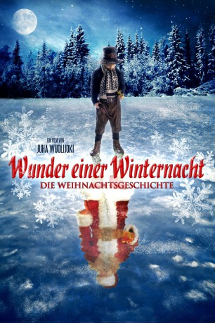

Alternativ: Christmas Story (Englischer Titel)
 
 IMDB-Wertung: 7.0 / 10
IMDB-Wertung: 7.0 / 10  Metascore:
Metascore: 
Vor Hunderten von Jahren begann die schönste Geschichte aller Zeiten... In einem kleinen Dorf in Lappland lebt die kleine Waise Nikolas. Die Dorfbewohner haben entschieden, dass sie gemeinsam den Jungen groß ziehen sollen, jede Familie passt ein Jahr lang auf den Jungen auf. Immer Heiligabend kommt er von der einen Familie zur nächsten. Um sich dankbar zu zeigen, hat Nikolas es sich zur Aufgabe gemacht, den Kindern seiner Gastfamilien Abschiedsgeschenke zu machen und am heiligen Abend zu übergeben. Jedes Jahr kommt eine Familie dazu. Als die Zeiten härter werden, muss Nikolas bei dem bösen Zimmermann Iisakki arbeiten. Nikolas macht aus der Not eine Tugend und verfeinert hier seine handwerklichen Fähigkeiten, um noch schönere Geschenke herzustellen. Doch als Iisakki Nikolas dies verbietet, gerät die schöne Geschenke-Tradition in Gefahr...
Jahr: 2007
Dauer: 80 Minuten
FSK: 6
Land: Finnland Studio: New KSMTonspuren: DTS-HD - ,
Untertitel:
Auflösung: 1080p (1920x832) Größe: 3686 MB
Genre: Drama, Fantasy, Familie, Weihnachten
Regisseur: Juha Wuolijoki
Drehbuch: Marko Leino, Marko Leino, Aku Louhimies, Juha Wuolijoki
Soundtrack: Leri Leskinen
Darsteller:
 Laura Birn als Aada
Laura Birn als Aada Ville Virtanen als Henrik
Ville Virtanen als Henrik Michael Badalucco als Emil
Michael Badalucco als Emil Katherine Borowitz als Aada / Hilda
Katherine Borowitz als Aada / Hilda Noah Emmerich als Nikolas
Noah Emmerich als Nikolas John Turturro als Iisakki
John Turturro als IisakkiDatei: X:\2007(N-Z)\Wunder einer Winternacht - Die Weihnachtsgeschichte (2007, FSK6, 1920x832) 3D.mkv seit 15.11.2018
Festplatte: HD 2007(A-Z)-2008(A-F)
 Es gibt insgesamt 56 Filme in der Gruppe '2007(N-Z)'
Es gibt insgesamt 56 Filme in der Gruppe '2007(N-Z)'